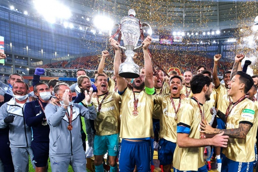

|
Виды спорта:
|
ФУТБОЛ

Есть вероятность, что именно сегодня будет определен чемпион страны. Коротко – если "Локо" побеждает "Зенит", команда Юрия Семина становится чемпионом.
Порядок вручения приза регламентируется специальным положением. Вот главное: "По возможности РФПЛ обеспечивает вручение Кубка клубу-чемпиону непосредственно после окончания матча, в котором определился клуб-чемпион, если это не противоречит требованиям по обеспечению безопасности при проведении матча. При наличии обстоятельств, препятствующих проведению церемонии награждения непосредственно после окончания матча, в котором определился клуб-чемпион, Кубок может быть вручен по окончании ближайшего домашнего матча клуба-чемпиона в рамках соответствующего сезона, а если все домашние матчи в сезоне клубом-чемпионом уже сыграны – то место и время вручения (награждения) определяется руководством РФПЛ по согласованию с РФС".
Сценарий первый – вручение на стадионе
Итак, РФПЛ сегодня доставит кубок в Черкизово, где играют "Локо" и "Зенит".
– Мы готовы к любому развитию событий в чемпионской гонке, – говорит президент РФПЛ Сергей Прядкин. – Готовы к тому, чтобы вручить кубок сегодня, если чемпион будет определен именно в этом туре.
|